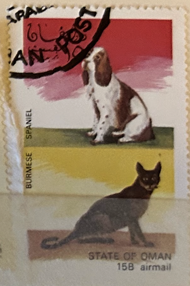
| SOURCE | TITLE| IMAGE MATCH | click to source page |
| eBay | Oman Postage Stamp | eBay | 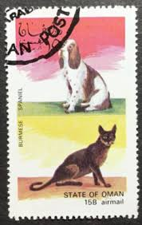 |
| eBay | Togo Stamp 1964-1969 - Cats and Dogs | eBay | 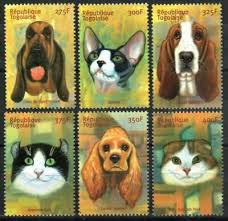 |
| eBay | First Day of Issue US Dogs 20 Cent Denomination Stamp Covers for sale | eBay | 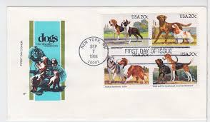 |
| eBay | AZERBAIJIAN SCOTT# 584/590 DOGS SET & SOUVENIR SHEET MINT NEVER HINGED | eBay | 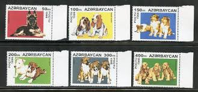 |
| 1976 Cuba Stamps Sc 2035-2040 Hunting Dogs Complete Set MNH | 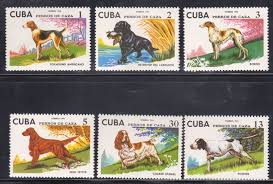 | |
| Bhutan issues vinyl postage stamps | 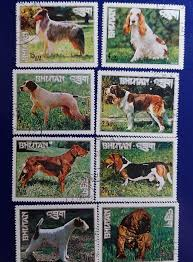 | |
| Dog Rescue Rubber Stamp, Save a life, Adopt a pet, Black Labrador Retriever - Mounted (as shown) | 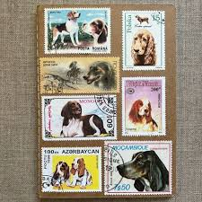 | |
| treasurefoxstamps | 20c American Dog Breeds Stamps .. Vintage Unused US Postage Stamps .. Pack of 20 – treasurefoxstamps | 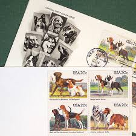 |
| unitedfashions.ae | ANTIGUA BARBUDA | 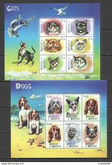 |
| eBay | Bhutan Dogs Stamps for sale | eBay | 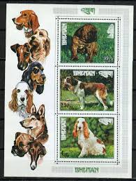 |
| Etsy | First Day of Issue Mans Best Friend in America Stamp Cache Envelope - Etsy Israel | 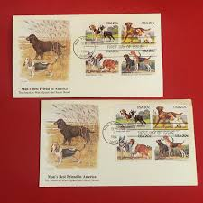 |
| Freestampcatalogue.com | Stamps from Ajman - Freestampcatalogue.com - The free online stampcatalogue with over 500.000 stamps listed. | 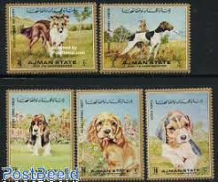 |
| eBay UK | 5 x AJMAN STATE DOG THEMED STAMPS-UNITED ARAB EMIRATES-1972-WITH MISSPELLINGS | eBay UK | 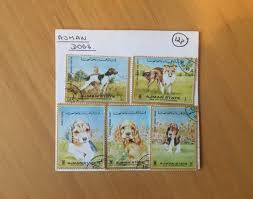 |
| eBay | 1976 Hunting Dogs,Labrador,Barzoi,Irish setter,Pointer,Cocker,Caribbean,2109/MNH | eBay | 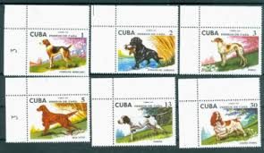 |
| Todocolección | ghana - valor facial 60 - sept 1975 goes metric - Buy Stamps from other African countries on todocoleccion | 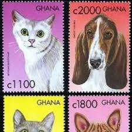 |
| eBay | 5 x AJMAN STATE DOG THEMED STAMPS-UNITED ARAB EMIRATES-1972-WITH MISSPELLINGS | eBay | 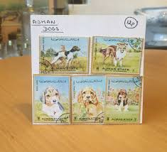 |
| eBay | Otterhound Collectibles for sale | eBay | 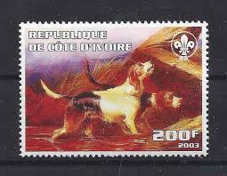 |
| Federal University of Agriculture, Abeokuta | OMAN STAMPS SHEETS MNH | 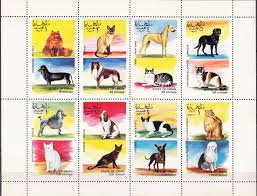 |
| Mystic Stamp | 2098-2101 - 1984 20c Dogs - Mystic Stamp Company | 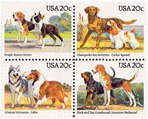 |
| eBay | UAE ARAB EMIRATE USED DOGS STAMPS LOT (UAE 476) | eBay | 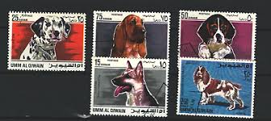 |
| eBay | Dogs Antiguan & Barbudan Stamps (1981-Now) for sale | eBay | 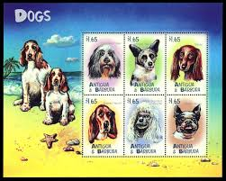 |
| eBay | Bhutan Pets Dogs rare set of 8 stamps 1972 B-5 | eBay | 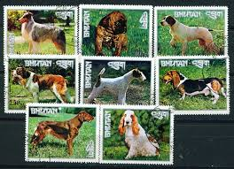 |
| Biblioteca Nacional de Angola | COLORANO SILK COVERS | 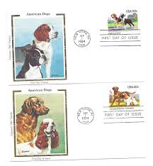 |
| postbeeld.com | Stamp 1967, Umm al-Quwain Dogs 8v, 1967 - Collecting Stamps - PostBeeld - Online Stamp Shop - Collecting | 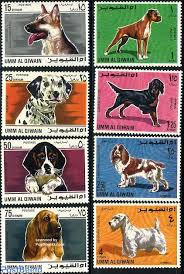 |
| eBay | Dogs Bissau-Guinean Stamps for sale | eBay | 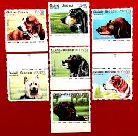 |
| eBay | Dogs Used African Stamps for sale | eBay | 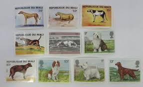 |
| stampmall.com.au | Tag Domestic Animals – Stamp Mall | 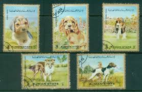 |
| Free stamp catalogue | Stamps with the theme Dogs - Freestampcatalogue.com - The free online stampcatalogue with over 500.000 stamps listed. | 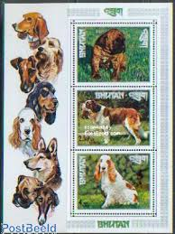 |
| eBay | SCOTT # 2098-2101 Dogs Issue United States U.S. Stamps MNH - Margin Block of 4 | eBay | 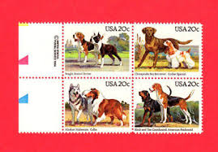 |
| Colnect | Stamp: Cat and dog (Ajman(Dogs and Cats) Mi:AJ 1762A,Col:AJ 1972.07.24-1 📮 | 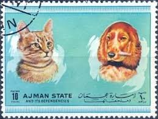 |
| eBay | USA Used, 1984 Issue, Scott #2098-2101, 20 Cent Dogs, (Set of 4) | eBay | 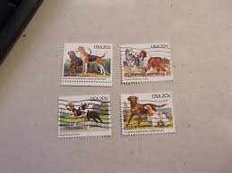 |
| eBay | Dogs Booklets Animal Postal Stamps for sale | eBay | 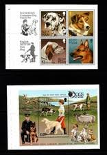 |
| eBay | Dogs Our Best Friends 20c Stamps FDC Fleetwood Cachet Sc#2098-101 14232A Collie | eBay | 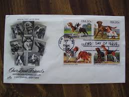 |
| Phil India Stamps | Animals & Wild Life| Phil India Stamps | 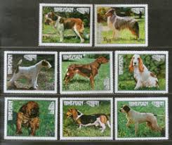 |
| Kenmore Stamp | Animal postage stamps | cat postage stamp |dog postage stamp | 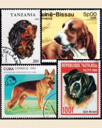 |
| eBay | Our Best Friends American Kennel Club Dogs 1984 First Day Cover Stamp | eBay | 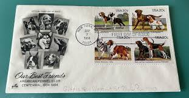 |
| Avion Thematics | Avion Thematics Stamps | Search for stamps on irish | 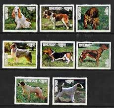 |
| eBay | Romania 1965 HUNTING DOGS,rare official FDC's | eBay | 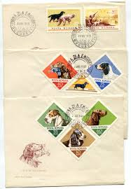 |
| eBay | Dogs Vietnamese Stamps for sale | eBay | 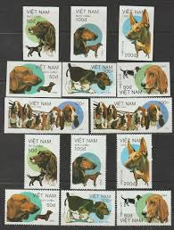 |
| eBay | 1989 Vietnam Stamps Dogs Collection Scott # 2016-2022 Cto Never Hinged | eBay | 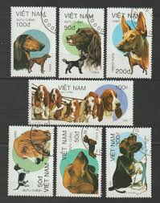 |
| eBay | Dogs Souvenir Sheet Bhutanese Stamps for sale | eBay | 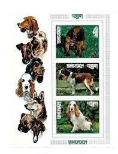 |
| Etsy | First Day of Issue Mans Best Friend in America Stamp Cache Envelope - Etsy UK | 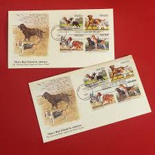 |
| eBay | RAS AL KHAIMA Cute set of 8 dogs, Alsation, Dalmation etc Mint NH (LotC502) | eBay | 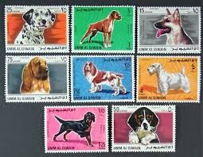 |
| Etsy | Vintage 20 Cent Stamps - Etsy | 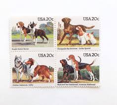 |
| eBay | s-l1200.jpg | 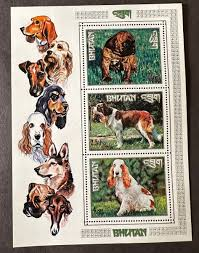 |
| eBay | Plate Block of 4 stamps 20 cent-Dogs-1984 - MNH Collectors # 1111 LOOK! 👀💎 | eBay | 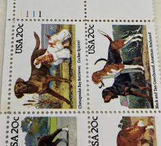 |
| eBay | 1976 Hunting Dogs,Labrador,Barzoi,Irish setter,Pointer,Cocker,Caribbean,2109,MNH | eBay | 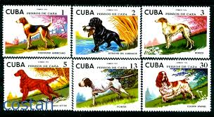 |
| eBay | 2098-01 Dogs Farnam, HF, block of 4, FDC | eBay | 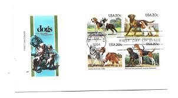 |
| eBay | Bissau-Guinean Stamps for sale | eBay | 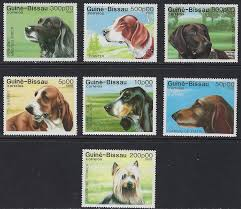 |
| eBay | Bhutan, 1972 Gogs short set, 8v, MNH | eBay | |
| Todocolección | kampuchea 1983 - cultura khemer, ta sam - usado - Compra venta en todocoleccion | |
| HipStamp | Umm al Qiwain Michel 210 A-217A, MNH, Dogs | Middle East - United Arab Emirates, General Issue Stamp / HipStamp | |
| Avion Thematics | Cambodia 1997 Sailing Ships Complete Set Of 6 Values Cto Used, SG 1681-86, stamps on ships | |
| eBay | POINTER ** Int'l Dog Postage Stamp Art Collection ** Great Gift Idea ** | eBay | |
| postbeeld.com | Stamp 1967, Umm al-Quwain Dogs 8v, imperforated, 1967 - Collecting Stamps - PostBeeld - Online Stamp Shop - Collecting | |
| Free stamp catalogue | Stamps from Bhutan - Freestampcatalogue.com - The free online stampcatalogue with over 500.000 stamps listed. | |
| Etsy | 5 Dog Bright Eyes Stamps, 32 Cent, 1998, Unused Postage Stamps, Vintage Collectible Stamps - Etsy | |
| eBay | Dogs Unused US Stamps (1941-Now 1981-1990 Year of Issue) for sale | eBay | |
| eBay | Umm al Qiwain 1967 Dogs Boxer/Dalmatian/Cocker/Shepherd/Setter/Terrier/Basset ** | eBay |